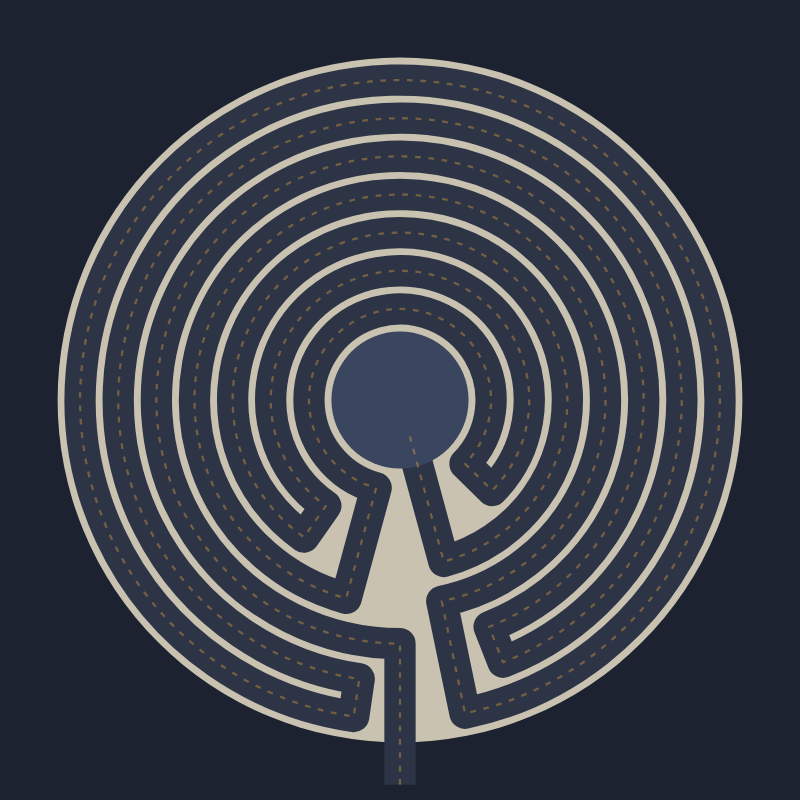

What a labyrinth is, how the classical one is built, and where it comes from.

A labyrinth is a single winding path that leads, without any choice, from the entrance to the center.
That is what sets it apart from a maze. A maze is a puzzle, with branches, dead ends and the chance of getting lost. A labyrinth has one way in, and if you keep walking you will reach the middle, after passing close to it and being led away again many times. The two words are often used for each other, and the most famous labyrinth of all, the one Daedalus built for the Minotaur, is described in the myth as a place nobody could find their way out of. But the figure drawn on the coins of Knossos and carved on rocks all over Europe is a labyrinth in the strict sense: one path, no choices.
A labyrinth is made of a few parts:
Number the circuits from the outside in, and write down the order in which the path visits them: that list, the path sequence, describes a labyrinth completely. The Cretan labyrinth is 3-2-1-4-7-6-5, then the center. You enter on the third ring, work your way out to the edge, cross to the fourth, jump to the seventh right next to the center, and then work your way back out to the fifth before stepping in. Labyrinth Maker draws any sequence that works on a single axis, and tells you when the walls would have to cross.
The classical labyrinth is one of the oldest designs people still draw, and it turns up across the ancient world.
There is no right way to walk one. Many people walk slowly, letting the path set the pace, and use the three stages of the walk (going in, pausing at the center, coming back out) to let go, to receive, and to return. Because there are no decisions to make, the mind is free to settle. Tracing a labyrinth on paper or on screen with a finger is an old practice too.
Labyrinth Maker draws round, one-axis labyrinths, like the Cretan and the Troy Town types: every circuit goes almost all the way around, and all the turns sit next to the axis, alternately on its right and on its left. The Chartres labyrinth is built differently, with turns on four axes, so the page draws its circuit order (5-4-3-2-1-6-11-10-9-8-7) as a one-axis labyrinth rather than the cathedral's own pattern.